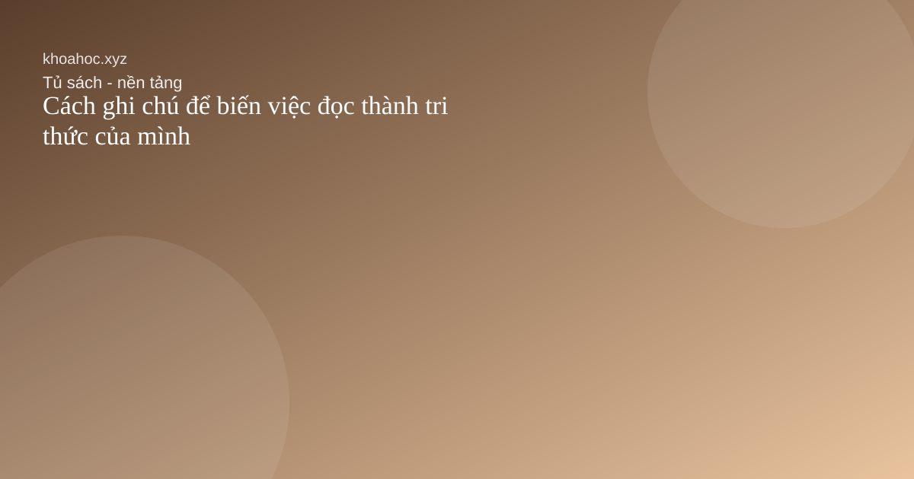
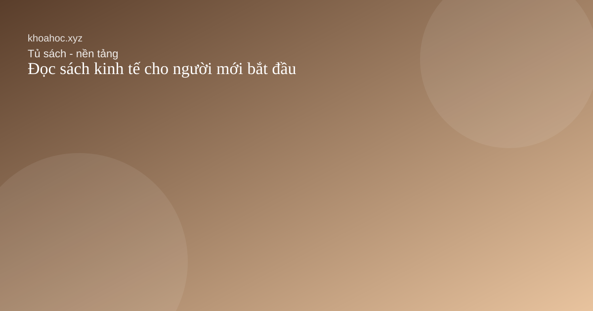
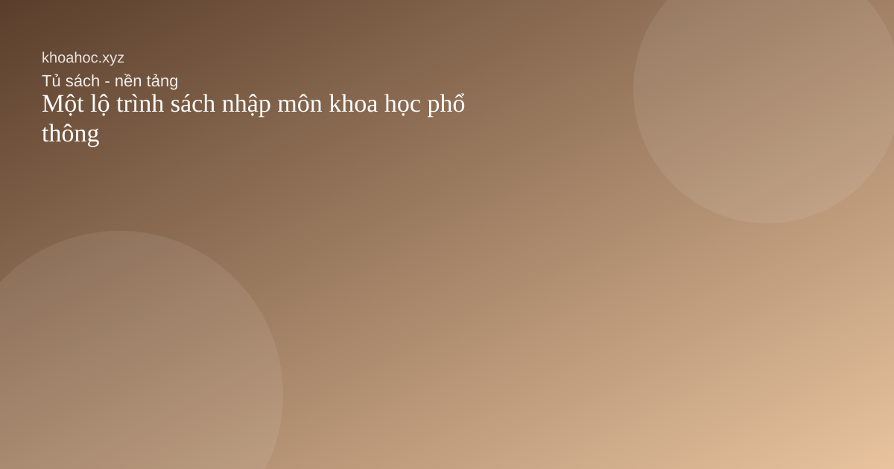
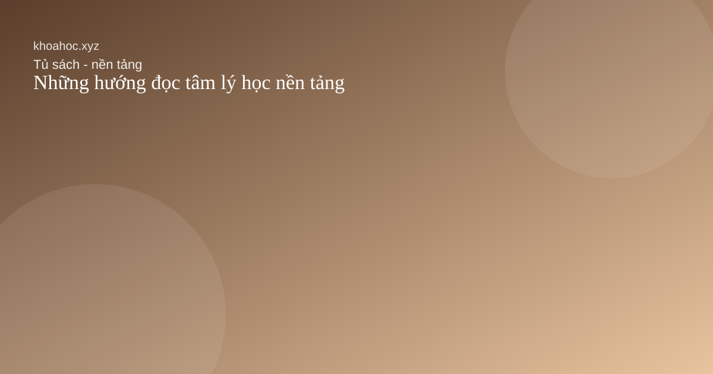
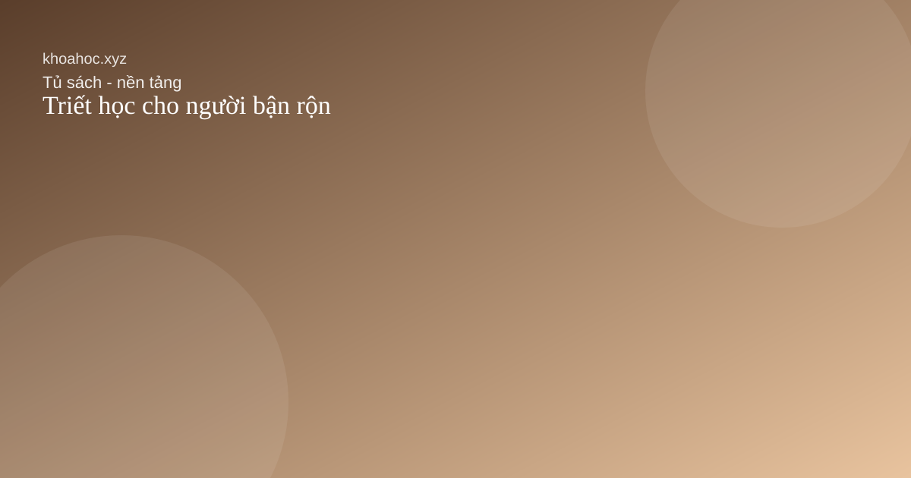

Cách ghi chú để biến việc đọc thành tri thức của mình

Một cuốn sách chỉ thực sự ở lại khi ta biết đối thoại với nó bằng ghi chú.

Một cuốn sách chỉ thực sự ở lại khi ta biết đối thoại với nó bằng ghi chú.

Điều quan trọng không phải đọc thật nhiều thuật ngữ mà là học cách nhìn thấy các đánh đổi.

Nếu muốn bắt đầu đọc khoa học một cách có hệ thống, hãy đi từ trực giác đến khái niệm.

Đọc tâm lý học không chỉ để hiểu người khác mà còn để bớt ngây thơ với chính mình.

Không cần đọc dày ngay từ đầu; điều quan trọng là giữ được sợi dây liên hệ với các câu hỏi lớn.